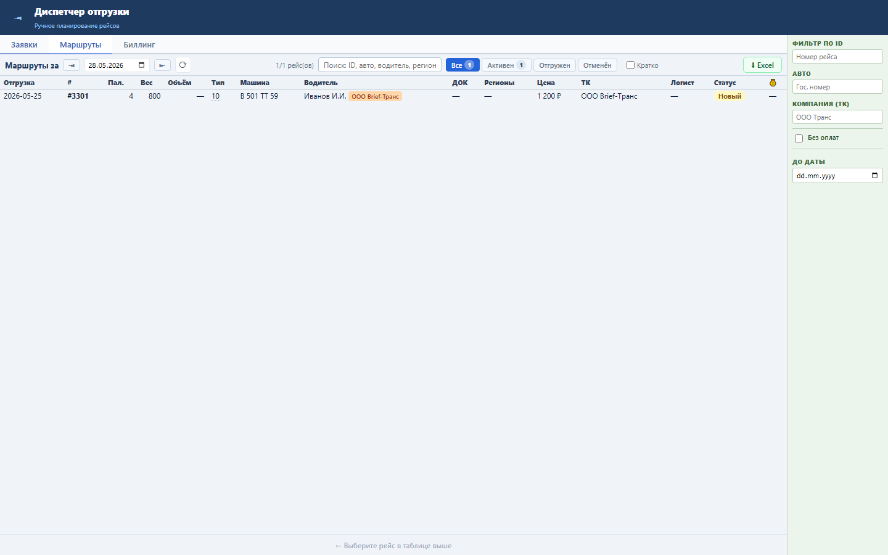
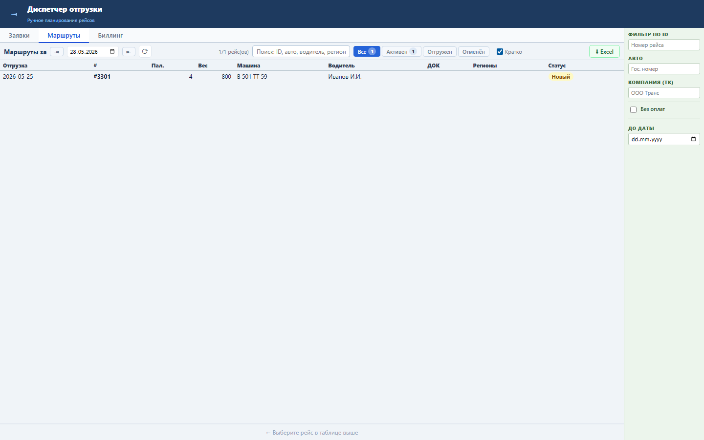

Блок нужен диспетчеру для быстрого просмотра рейсов, когда второстепенные колонки мешают сканированию.
Данные остаются теми же: GET /api/admin/transport/tasks. Меняется только набор видимых колонок на клиенте.
В режиме «Кратко» остаются ключевые поля рейса: дата отгрузки, номер, паллеты, вес, машина, водитель, док, регионы и статус.


Проверка: functional, UI smoke и load gate пройдены.